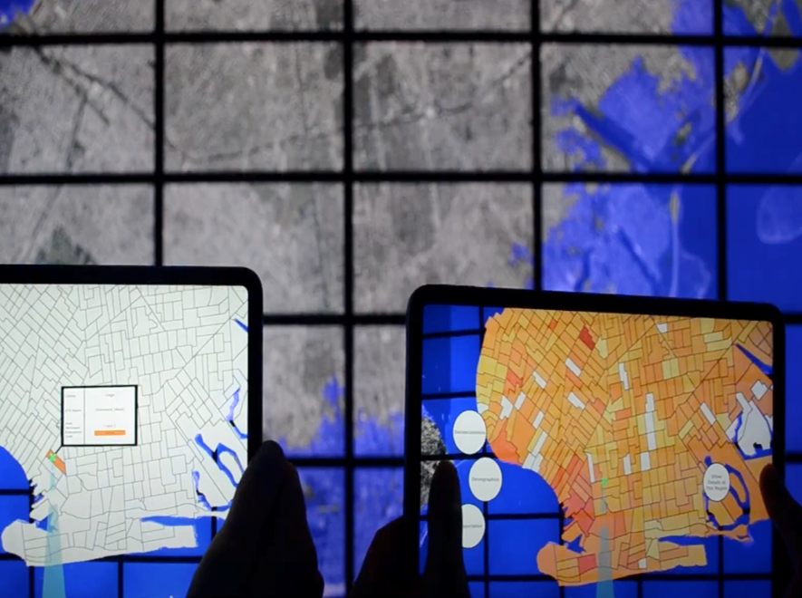
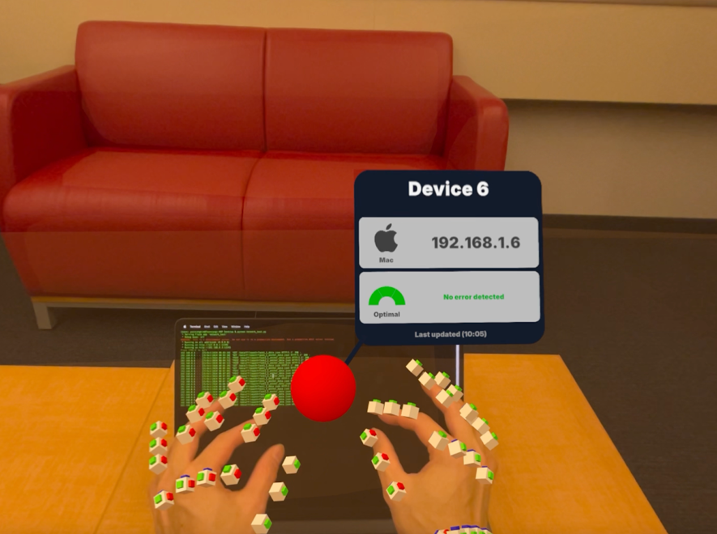
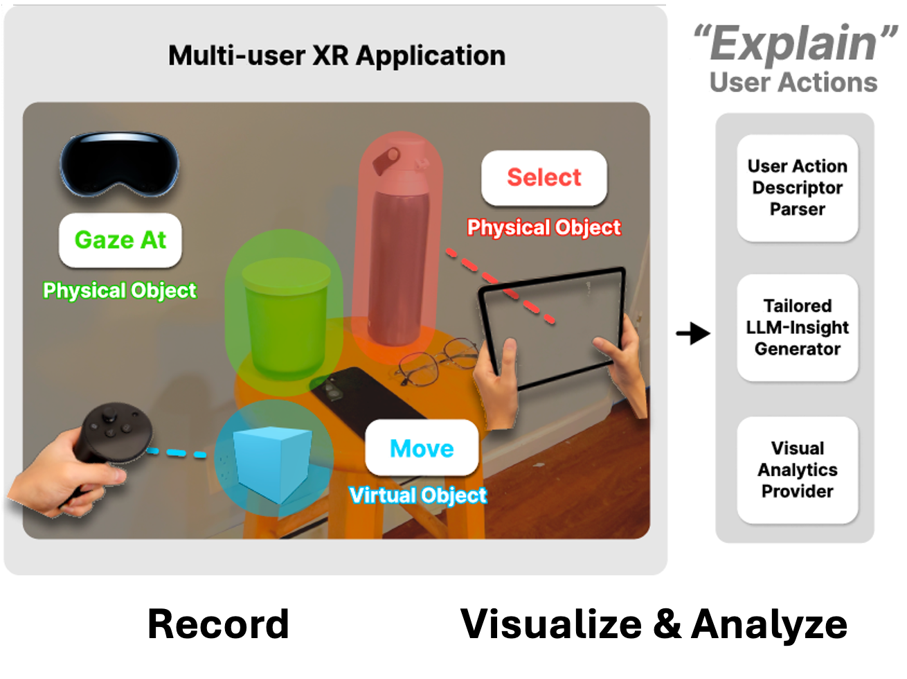
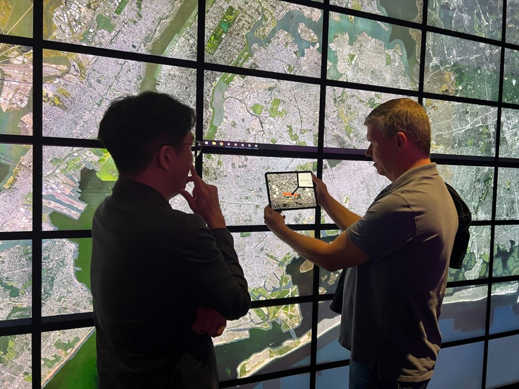
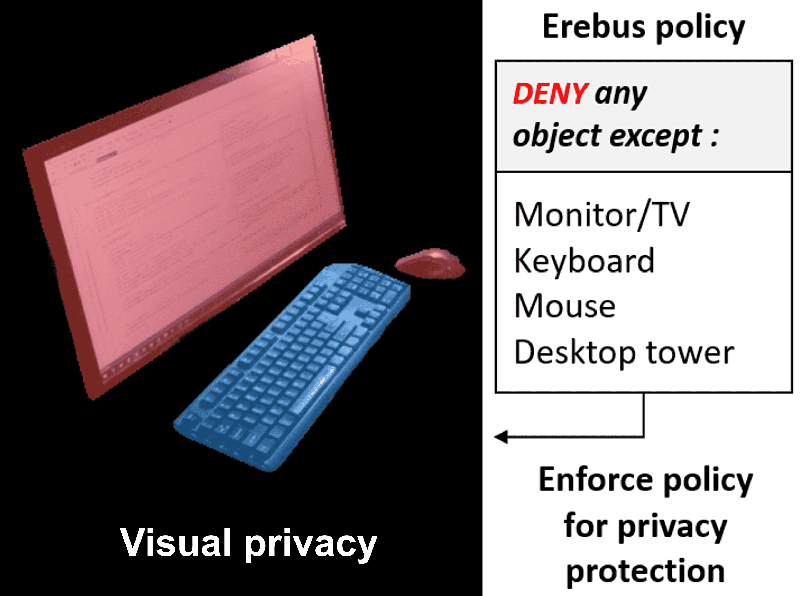

Hello! I am a 5th year PhD at Stony Brook University (New York) in Visualization Lab under the Center for Visual Computing, advised by Dr. Arie E. Kaufman.
My research interests revolve around the topics of user interface across virtualities (VR, AR, MR). I aim to address the challenges of designing an interface that is (1) context-aware and adaptive, (2) device-independent, and (3) platform-agnostic for both traditional (non-immersive) and immersive environments.
I believe myself as a "system-like" researcher who likes to design a foundational framework, tool, or, a standard that benefits the eXtended Reality (XR) and Visualization research community.
I am also always thrilled to expand my research ideas with the researchers from other relvant domains such as HCI, Computer Vision, NLP, and Security.
Prior to my PhD journey, I received my M.S. degree in 2020 from Stony Brook and was privileged enough to research under the supervision of Dr. Xiaojun Bi. I receive my B.S. degree from Soongsil University, South Korea, in 2017.
I actively conduct research to contribute to the communities of XR, Visualization, and HCI: IEEE TVCG, ISMAR, VR, VIS, ACM CHI, and UIST.
News
- Apr 11, 2025 My colleague and I submitted a paper on Ubiquitous Computing and Context-aware AR, to IEEE ISMAR 2025.
- Apr 11, 2025 My colleagues and I submitted a paper on Cross-reality, Tiled-display, and Hand-held AR, to IEEE ISMAR 2025.
- Jan 16, 2025 "Explainable XR" was accepted to IEEE VR 2025 (as TVCG paper), I will be presenting it at St. Malo, France, this March!
- Dec 12, 2024 My colleague and I submitted a paper on the usability of 2D and 3D immersive interface, to IEEE TVCG.
- Nov 15, 2024 My colleague and I submitted a paper to CVPR 2025, on fast reconstruction of 3D digital twin, for XR.
- Oct 08, 2024 Our TVCG accepted paper, "Submerse: Visualizing Storm Surge Flooding Simulations in Immersive Display Ecologies" is going to be presented at IEEE VIS 2024.
- Oct 08, 2024 Our TVCG accepted paper, "VoxAR: Adaptive Visualization of Volume Rendered Objects in Optical See-Through Augmented Reality" is going to be presented at IEEE VIS 2024.
- Sep 11, 2024 My colleagues and I submitted a paper on Cross-virtuality and Visual analytics, to IEEE VR 2025.
Current Projects
Projects introduced below are still in progress, thus, cannot be disclosed in detail.
Also, some projects are not included in the list below. Please reach out to me via email to learn more. I am open for collaboration or discussion.
-

Using Hand-held AR Device for Tiled-display Systems
We are designing an end-to-end framework that facilitates the usability of a mobile hand-held AR device in tiled-display systems.
-

Exploring Spatial Computing for Network Security Applications
We are exploring immersive interface designs for network security applications and investigate their use-cases.
Publications
- 
-

- 
-

-

Design of Privacy Preservation System in Augmented Reality
Y. Kim, S. Boorboor, A. Rahmati, A. Kaufman.
IEEE VizSec Poster., 2021. -

-
 Flexible Remote-Control Application for Virtual Reality using Virtual Graphics Driver and OpenCV
Flexible Remote-Control Application for Virtual Reality using Virtual Graphics Driver and OpenCV
Y. Kim, G. Ha, S. Lee.
IJAER., 2017.